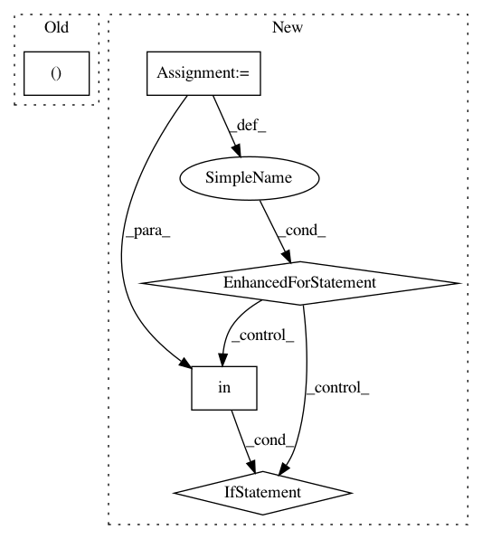

9514b001889e7331d80cc8c4f168b284a27825e0,debug_toolbar/utils/__init__.py,,tidy_stacktrace,#,18
Before Change
continue
if socketserver_path in s_path:
continue
trace.append((s[0], s[1], s[2], s[3]))
return trace
def get_template_info(source, context_lines=3):
After Change
``stack`` should be a list of frame tuples from ``inspect.stack()``
trace = []
for frame, path, line_no, func_name, text in (f[:5] for f in stack):
s_path = os.path.realpath(path)
// Support hiding of frames -- used in various utilities that provide
// inspection.
if "__traceback_hide__" in frame.f_locals:
continue
if getattr(settings, "DEBUG_TOOLBAR_CONFIG", {}).get("HIDE_DJANGO_SQL", True) \
and django_path in s_path and not "django/contrib" in s_path:
continue
if socketserver_path in s_path:
continue
trace.append((path, line_no, func_name, text))
return trace
def get_template_info(source, context_lines=3):
line = 0
In pattern: SUPERPATTERN
Frequency: 4
Non-data size: 5
Instances
Project Name: jazzband/django-debug-toolbar
Commit Name: 9514b001889e7331d80cc8c4f168b284a27825e0
Time: 2011-05-10
Author: dcramer@gmail.com
File Name: debug_toolbar/utils/__init__.py
Class Name:
Method Name: tidy_stacktrace
Project Name: masa-su/pixyz
Commit Name: 33573192e348ad5e1dfe188df6f3fa2a7a892372
Time: 2020-10-05
Author: kaneko@weblab.t.u-tokyo.ac.jp
File Name: pixyz/distributions/distributions.py
Class Name: DistributionBase
Method Name: get_params
Project Name: brian-team/brian2
Commit Name: dd5ce45d6d03a2ff00b0792c084e13e717a81311
Time: 2017-08-31
Author: marcel.stimberg@inserm.fr
File Name: brian2/core/network.py
Class Name: Network
Method Name: run
Project Name: nicodv/kmodes
Commit Name: 6b8fd96888fd95e82e010837439a84a3e7487336
Time: 2016-10-16
Author: njdevos@gmail.com
File Name: kmodes/tests/test_common.py
Class Name:
Method Name: test_non_meta_estimators